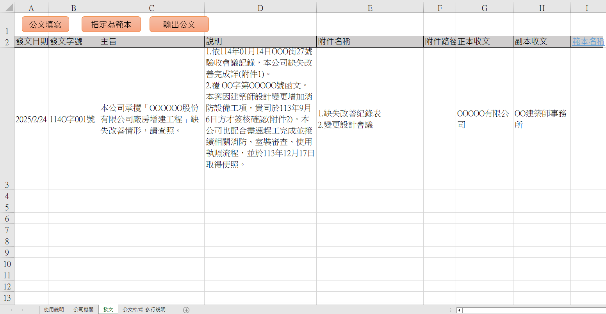
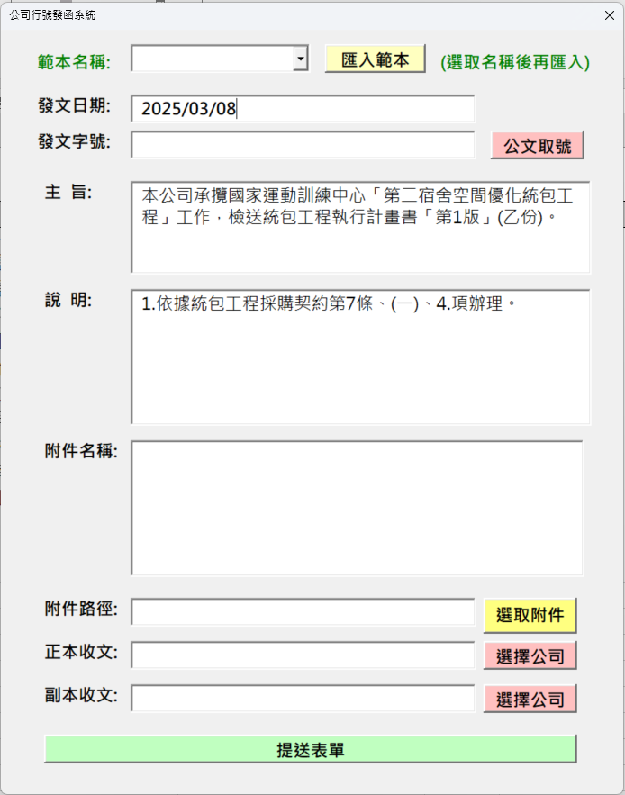

公司行號發函VBA系統
🚩使用者情境
想請問有沒有可能用VBA 去做一般公司行號發函的系統，因為目前公司是土法煉鋼用WORD去打，但是每次都要做兩個檔案正本跟副本，因為有時候發文是需要發給業主跟PCM，甚至是發文編號也能系統根據日期自動整理產生
🛒需求分析
基本流程
graph TD;
A[接獲單位來文] --> B{開始進行公文填寫};
B -->|手動填寫| C[取得公文文號];
B -->|匯入範本| C;
C --> D[輸入主旨、說明];
D --> E[選取附件內容];
E --> F[選擇正副本收文對象];
F --> G[提送表單];
G --> H{是否為通用類型?};
H -->|是| I[建立為範本] --> J[列印公文];
H -->|否| J[列印公文];
使用者畫面
 
資料庫
報表
最終成品
資料夾架構
於Excel的同個目錄下會出現三個資料夾
- 發文PDF:存放公文PDF，根據不同的正本副本機關皆進行儲存!
- 發文原始檔:存放印製成PDF的Excel檔
- 附件資料夾:根據各個不同公文編號提送表單時的附件內容拉取至該資料夾存放
🐞錯誤紀錄
1. 說明格式
說明內容有很多點時，Excel產製的格式無法像Word有縮行段落。
發生原因
原本的設計是將說明欄位的內容直接代入套版的某一儲存格。
解決方法
在表單上要輸入資料時，如有分行需求，用shift+Enter讓內容跳至下個段落，程式在判斷時就能找到vbCrLf 這個關鍵字進行拆分，拆分就能得知順序，再將順序編號代入到B欄位、順序內容代入到C欄位，就能製作出類似Word的縮行段落。
2. 內容消失
儲存格欄位無法自動跟著內容的自動換行進行放大，導致部分內容會被儲存格的列高限制其顯示內容。
發生原因
在程式碼中設定 rows.autofit，但如果遇到合併儲存格時就會失效。
解決方法
取得合併儲存格的各個欄位寬度，在不進行列印的單儲存格設定其寬度等同合併儲存格的各個欄位寬度總和，並且自動換行、字型大小都需要一致，未來在進行自動列高調整時就會去抓取該單儲存格的屬性自行調整。
3. 列印成果
Excel中的版型看起來的畫面與預覽畫面相符，但是輸出成PDF的時候就會有些許落差。
發生原因
不明，猜測是檢視設定為分頁模式?
解決方法
將檢視調整為整頁模式則可以正常列印，版型不會有變化，文字也會如預覽時的位置。
4. 附件選取
附件夾帶時無法選擇不同目錄下的檔案內容。
發生原因
Application.FileDialog(msoFileDialogFilePicker) 天生限制只能在同一個目錄下進行選擇多個檔案路徑。
解決方法
讓使用者能有機會表達我還要選擇檔案，詳細程式碼如下所示:
1 | Function SelectFiles() As String |